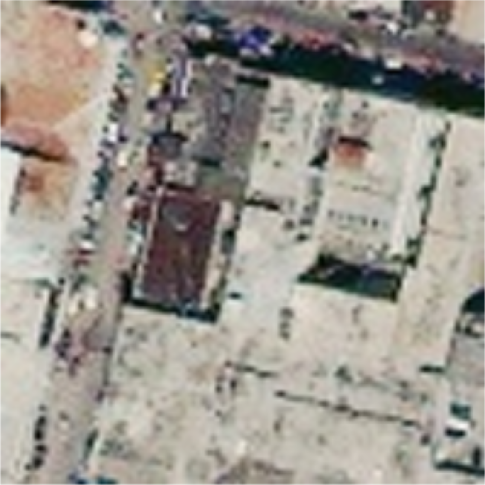
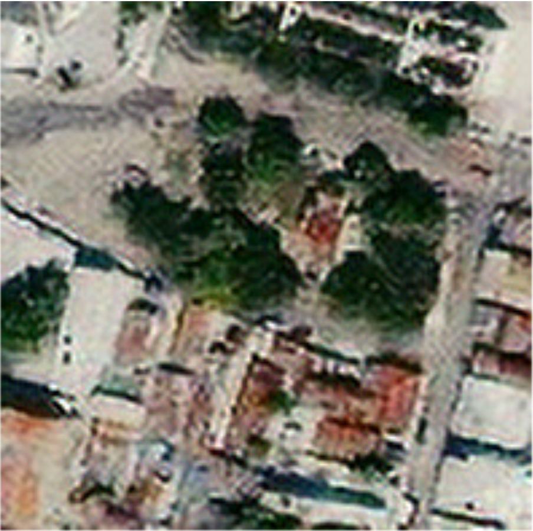

Enhancing Pre-disaster Images
Interpolation methods - A diverse range of interpolation methods were applied to pixels to upsample the images including Nearest Neighbor, Bilinear and Bicubic interpolation. The aforementioned methods are neither specified nor trained for the physical properties and contextual conditions (e.g., photogrammetric, spectrographic, refractive, atmospheric) inherent to satellite imagery. Therefore, suffer from problems such as bleeding-edge border effects between adjacent pixels as well as within pixel averaging of values when spatial resolution higher than pixelation. Also, since these images are taken from altitudes over 200 miles, the adjacent pixel values in conjunction with within-pixel value averaging often tend to result in high degrees of conflated spectral and spatial uncertainty and ambiguity.
Neural network based upsampling - Although the literature for image super-resolution (improving the resolution of the images) is considered to be extensive, much of this literature is focused upon the aesthetic visual enhancement of images versus the accurate forensic validity of such enhancement. Also, the state of the art models from this literature do not emphasize satellite imagery, since these models tend to be predominantly (if not almost exclusively) trained on images from ground-based photodetection platforms. Nevertheless, an attempt was made to upsample these images using a state of the art, RDNet model. An example is shown below.
-

(a) Original image (b) Bicubic interpolation (c) Bilinear interpolation
-

(d) Nearest Neighbour interpolation (e) RDNet upsampling